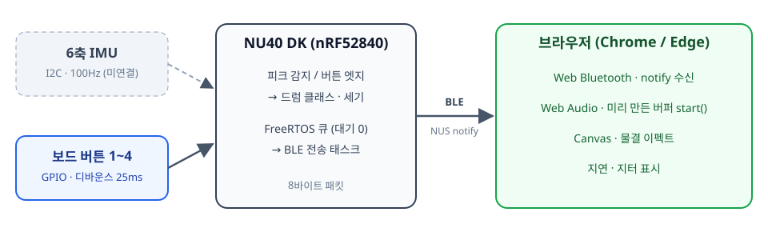
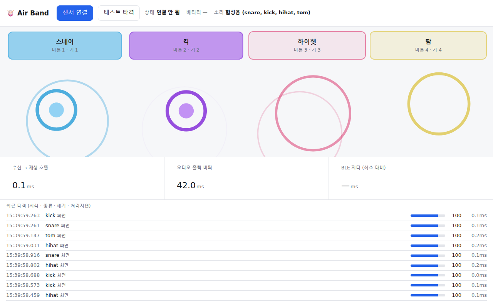
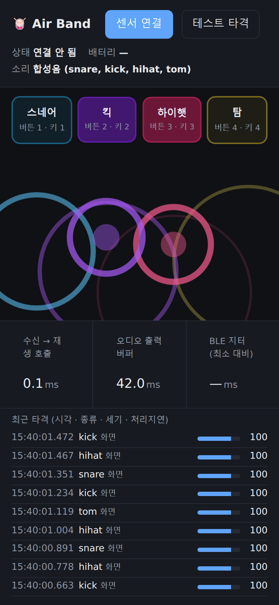

작은 보드 + 블루투스 + 웹 브라우저로 만든 에어 드럼
🔗 바로 해 보기: hex-aragon.github.io/air-band
보드는 "드럼 쳤음!" 신호만 보내는 리모컨이고, 실제 소리는 컴퓨터·폰의 브라우저(크롬)가 냅니다. TV 리모컨이 소리를 내지 않고 TV가 소리를 내는 것과 같습니다.
최종 목표: 휘두르는 동작만 보고 어떤 드럼인지 AI가 구분하는 양손 에어 드럼
누코드의 개발용 보드. 안에 nRF52840이라는 칩이 있어 블루투스와 프로그램 실행을 둘 다 합니다. 버튼 4개, LED 4개가 달려 있습니다.
움직임을 재는 작은 부품. 스마트폰이 가로·세로를 아는 것도 이 센서 덕분입니다. 아직 연결 안 됨 → 이번엔 버튼으로 대신했습니다.
PC의 크롬·엣지, 안드로이드 크롬. Web Bluetooth(웹페이지가 블루투스를 쓰는 기능)와 Web Audio(웹페이지가 소리를 내는 기능)를 씁니다.

입력은 버튼이든 센서든 보드 안에서 똑같은 "쪽지"로 바뀌어 같은 길로 나갑니다. 그래서 나중에 센서를 붙여도 웹은 고칠 필요가 없습니다.
① 보드가 "방 열었어요"라고 알림 (광고)
② 브라우저가 방에 들어감 (연결)
③ "새 메시지 알림 켜기" (notify 구독)
④ 버튼 누를 때마다 보드가 메시지 보냄
ms(밀리초) = 1/1000초. 15ms는 눈 깜빡이는 시간(약 100~150ms)보다 10배 빠름
예: 보드 버튼 2(킥)를 눌렀을 때 보내는 쪽지
| 칸 | 뜻 | 값의 의미 |
|---|---|---|
| 0 손 | 어느 손인가 | 0 = 오른손 (나중에 왼손 보드는 1) |
| 1 모드 | 어떤 악기 모드인가 | 0 = 드럼 (나중에 다른 악기 추가 가능) |
| 2 드럼 종류 | 무슨 드럼인가 | 0 스네어 · 1 킥 · 2 하이햇 · 3 탐 |
| 3 세기 | 얼마나 세게 | 1(아주 약하게) ~ 127(가장 세게). 전자 악기 표준(MIDI)과 같은 범위 |
| 4~7 시각 | 언제 쳤나 | 보드가 켜진 뒤 흐른 시간(ms). 위 예시는 112,389ms ≈ 1분 52초 |
112,389를 4칸에 나누는 것은 숫자를 자리별로 나눠 적는 것과 같습니다. 다만 10진법이 아니라 256진법이라 [5, 183, 1, 0]이 됩니다. (5 + 183×256 + 1×65,536 = 112,389)
블루투스 전송은 길이 막히면 최대 0.1초까지 기다립니다. 주문받는 사람이 배달까지 직접 하면 그동안 다음 버튼을 놓칩니다. 그래서 주문서만 꽂고 바로 돌아옵니다.
[I2C] scan: 0x6A
[IMU] 감지 실패 — 재시도
[IMU] 0x6A reg0x0F=FF reg0x75=FF보드가 켜질 때 출력한 로그
보드가 부품들에게 출석을 불렀더니 0x6A 한 명만 대답했고, 그건 센서가 아니라 보드의 전원 관리 부품이었습니다. 센서를 기다리느라 보드가 블루투스도 켜지 않고 멈춰 있었습니다.
센서만 빼고 보드 → 블루투스 → 브라우저 → 소리 전체 길을 먼저 검증했습니다. 센서가 오면 입력만 바꿔 끼우면 됩니다.

칠 때마다 소리를 새로 만들면 늦습니다. 그래서 페이지가 열릴 때 드럼 4개 소리를 미리 만들어 두고, 신호가 오면 재생 버튼만 누릅니다. 노래방 반주를 미리 받아 두는 것과 같습니다.
소리 파일이 없어도 코드로 드럼 소리를 합성합니다.
| 드럼 | 만드는 법 |
|---|---|
| 스네어 | "둥" (낮은 음) + "치" (잡음) |
| 킥 | 아주 낮은 "쿵" — 음이 뚝 떨어짐 |
| 하이햇 | 짧고 높은 "츳" 잡음 |
| 탐 | 킥보다 높은 "둥" |
세기 → 볼륨: 사람 귀는 작은 소리 차이에 민감해서 곡선으로 바꿈 (세기 100 → 볼륨 68%)
신호 받고 → 재생 누르기
브라우저 안 처리 시간. 거의 0
재생 → 스피커에서 소리
윈도우가 소리를 스피커로 내보내기까지 대기줄
블루투스 흔들림(지터)
평소보다 몇 ms 늦게 왔나. 보드 연결 시 표시
늦어지는 건 대부분 컴퓨터 스피커 쪽입니다. 블루투스 이어폰을 쓰면 여기에 0.1초 이상 더 늦어지니, 시연할 때는 유선 스피커가 좋습니다.

| 기기 · 브라우저 | 동작 |
|---|---|
| PC 크롬 · 엣지 | ✅ 됨 |
| 안드로이드 크롬 | ✅ 됨 |
| 아이폰 (사파리 · 크롬) | ❌ 애플이 웹 블루투스를 막아 둠 |
| 파이어폭스 | ❌ 웹 블루투스 미지원 |
보안 때문에 웹 블루투스는 https:// 주소나 내 컴퓨터(localhost)에서만 켜집니다.
| 증상 | 원인 (쉽게) | 해결 |
|---|---|---|
| 보드를 흔들어도 반응 없음 | 모션 센서가 연결되어 있지 않았음 | 버튼 모드 추가 |
| 개발 도구 설치 실패 | 윈도우 폴더를 리눅스(WSL)에서 쓸 때 권한 정보가 없었음 | WSL 설정(wsl.conf) 수정 후 재시작 |
| 코드를 고쳐도 화면이 그대로 | 윈도우 폴더 파일 변경을 개발 서버가 알아채지 못함 | 주기적으로 직접 확인(폴링)하게 설정 |
| 물결이 타원으로 찌그러짐 | 그림판 크기를 처음에 한 번만 잼 | 크기 바뀔 때마다 다시 재게 수정 |
| 보드 버튼이 안 먹는 것 같음 | 브라우저와 블루투스 연결 전에는 보드가 아무것도 안 보냄 | 진단으로 버튼 정상 확인 + 화면에 "먼저 연결하세요" 안내 |
TinyML은 보드처럼 작은 기기 안에서 돌아가는 AI입니다. 스네어·하이햇·탐을 칠 때의 동작 모양을 학습시켜 두면, 버튼 없이 휘두르는 모양만 보고 드럼 종류를 맞힙니다.
① 크롬에서 hex-aragon.github.io/air-band 열기
② 화면 패드 클릭, 또는 키보드 1 · 2 · 3 · 4
🥁 리듬 게임: /air-band/rhythm.html
① 보드를 USB로 연결
② 센서 연결 → AirBand-R → 페어링
③ 상태가 "연결됨"으로 바뀌면
④ 보드 버튼 1~4 누르기
연결 전에는 보드 버튼을 눌러도 소리가 나지 않습니다 (보드가 보낼 곳이 없어서). 보드의 LED1만 깜빡입니다.